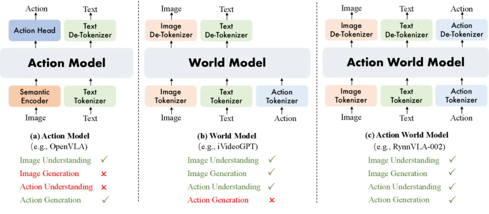
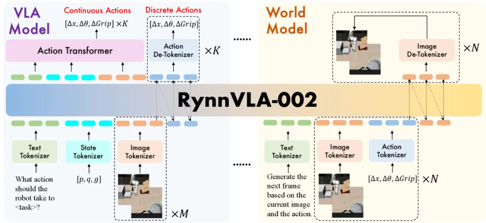
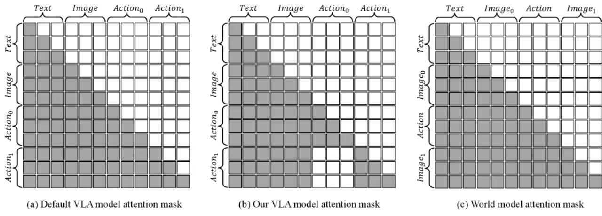
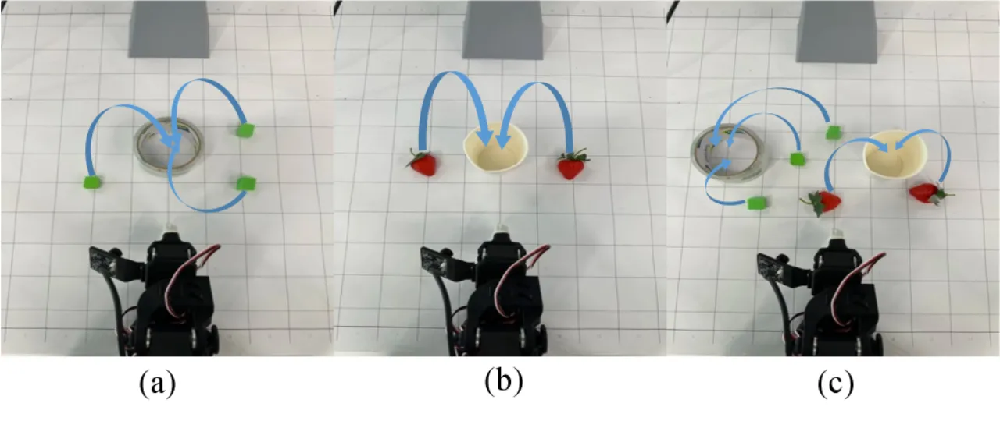
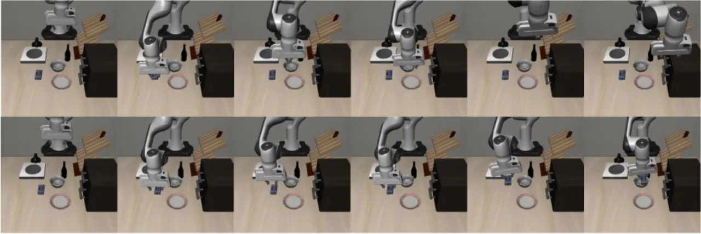
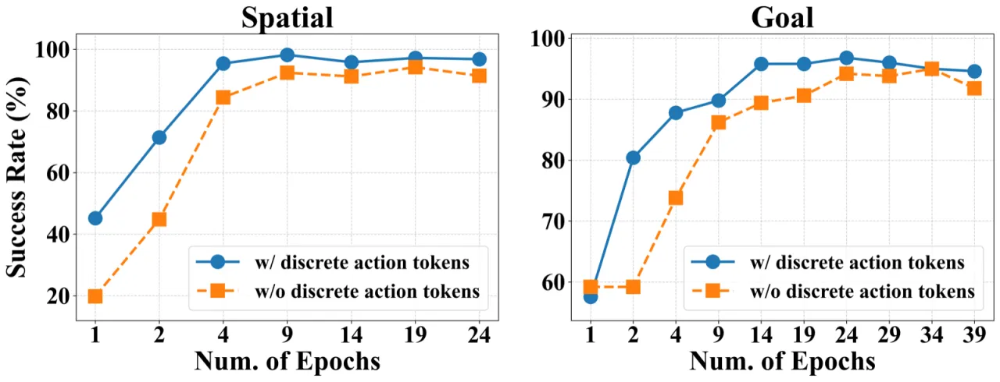

将 Vision-Language-Action (VLA) 模型与 World Model 统一于同一个 Chameleon 式自回归主干中，使两者在共享 token 空间内相互增强：VLA 提升视觉理解以改善图像生成质量，World Model 赋予 VLA "想象力"从而提高动作精度。无需大规模机器人预训练，在 LIBERO 仿真基准上即达到 97.4% 成功率，真实机器人实验成功率提升 50%。
VLA 模型与 World Model 各有所长，却长期相互割裂：前者能生成动作，却缺乏对世界物理动态的内部"想象"；后者能预测未来视觉状态，却无法直接输出控制指令。这种"功能鸿沟"限制了两类模型在真实机器人场景中的潜力。
"RynnVLA-002 internalizes the VLA objective and the action-conditioned world-modeling objective in one Chameleon-style autoregressive backbone with a shared token space."

现有 VLA 方法（如 RT-2）将动作仅置于输出端，模型内部无法建立对动作效果的推理；而现有 World Model（如 Genie）只预测视觉状态，缺乏直接的机器人控制能力。RynnVLA-002 的核心洞察是：VLA 的精准动作能力可以改善 World Model 的视觉一致性，World Model 的预见性又能反哺 VLA 的动作决策，两者在同一主干内协同训练即可实现"1+1>2"的效果。
RynnVLA-002 采用共享自回归 Transformer 主干，将视觉 token（VQ-GAN 编码）、文本 token（BPE）、状态/动作 token（连续值离散化为 256 bins）统一到 65,536 大小的词汇表中，分别以两种序列格式进行训练：VLA 序列生成动作，World Model 序列预测下一帧图像。

图像通过 VQ-GAN 压缩（压缩比 16，codebook 大小 8192）编码为离散视觉 token；文本采用 BPE；连续状态与动作值均离散化为 256 bins 后编码。
{text} {state} {image-front-wrist}×M {action}×K{images-front-wrist} {action} {images-front-wrist} [重复 N 次]在标准自回归生成中，动作 chunk 内的前一个动作 token 会影响后续动作 token，导致误差累积。本文提出修改注意力掩码，使当前动作仅依赖文本与视觉输入，禁止访问前序动作 token，从而显著缓解误差传播（尤其在 K=10 的长动作块中效果明显）。

在离散自回归主干之上，额外引入轻量级连续 Action Transformer，利用双向注意力并行生成平滑连续动作序列，具有以下优势：
在 LIBERO 仿真基准（四个子任务：Spatial / Object / Goal / Long）和真实 LeRobot SO100 机械臂（两类 pick-and-place 任务，各约 248-249 条示范）上进行评测，与有/无预训练的多个 VLA baseline 对比。
| 方法 | 预训练 | LIBERO-Spatial | LIBERO-Object | LIBERO-Goal | LIBERO-Long | 平均 |
|---|---|---|---|---|---|---|
| OpenVLA | ✓ | 84.7 | 88.4 | 79.2 | 53.7 | 76.5 |
| π₀ | ✓ | 98.6 | 98.8 | 98.2 | 98.8 | 98.6 |
| RynnVLA-002-Discrete | ✗ | 91.2 | 97.4 | 93.4 | 91.2 | 93.3 |
| RynnVLA-002-Continuous | ✗ | 96.4 | 99.8 | 96.4 | 94.4 | 97.4 |
"RynnVLA-002 remains competitive with these pretrained baselines and outperforms most non-pretrained methods"，在无任何大规模机器人预训练的条件下达到 97.4% 平均成功率。
| 任务 | 场景 | RynnVLA-002（无预训练） |
|---|---|---|
| Place block inside circle | 单目标 | 90.0% |
| Place block inside circle | 多目标 | 90.0% |
| Place block inside circle | 有干扰物 | 80.0% |
| Place strawberries into cup | 多目标 | 80.0% |

通过系统消融验证了核心设计的有效性：


"Current real-world evaluation focuses on SO100 pick-and-place manipulation"，仅测试了两类抓放任务，尚未在更广泛的机器人平台（如双臂、移动机器人）或更复杂操作任务（如工具使用、精细装配）上进行验证。作者明确表示需要"more robot platforms, more sophisticated manipulation tasks"。
"training a single real-world task currently takes roughly four days"，计算开销较大，限制了快速迭代与大规模部署。
当前采用逐 token 自回归方式生成图像，推理效率受限（离散动作模式下最低仅 2.5 Hz）。作者指出未来需探索"more efficient image-token generation"方案，如并行解码或连续表示。